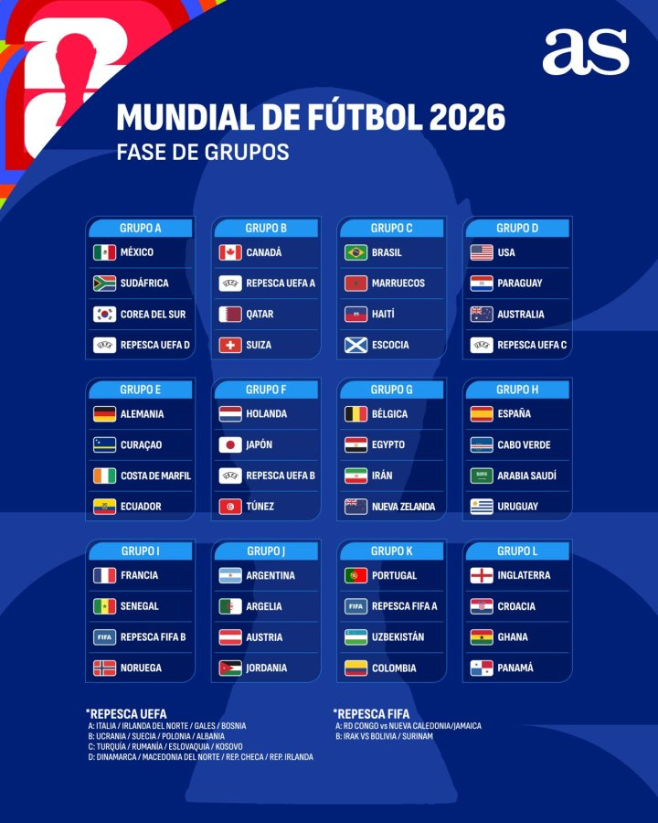

Todo sobre el sorteo del Mundial
El Mundial 2026 tendrá un formato histórico con 48 selecciones participantes. El sorteo será el evento que definirá el camino de cada selección hacia la gran final.
Equipos Clasificados
Los países clasificados provienen de todas las confederaciones del mundo: UEFA, CONMEBOL, CONCACAF, CAF, AFC y OFC.
Cada equipo será ubicado en un bombo dependiendo de su ranking FIFA y región.
Bombos del Sorteo
Los 48 equipos se dividirán en 4 bombos con 12 selecciones cada uno. Los bombos se organizan principalmente por el ranking FIFA actual.
Bombo 1 – Cabezas de serie
- Equipos mejor posicionados en el Ranking FIFA
- Incluye al anfitrión: Estados Unidos, México y Canadá*
Bombo 2 – Selecciones de alto rendimiento
- Equipos con ranking elevado pero que no entraron al bombo 1
- Representan un desafío para cualquier grupo
Bombo 3 – Selecciones competitivas
- Posiciones medias del Ranking FIFA
- Planteles en crecimiento con potencial sorpresa
Bombo 4 – Últimos clasificados
- Los últimos lugares de cada confederación
- Equipos que consiguieron su pase mediante repechaje
*Los anfitriones estarán en el Bombo 1 automáticamente.
Formato del Mundial
Habrá 12 grupos de 4 equipos. Avanzan:
- Los 2 primeros de cada grupo
- Los 8 mejores terceros
El torneo contará con 104 partidos en total.